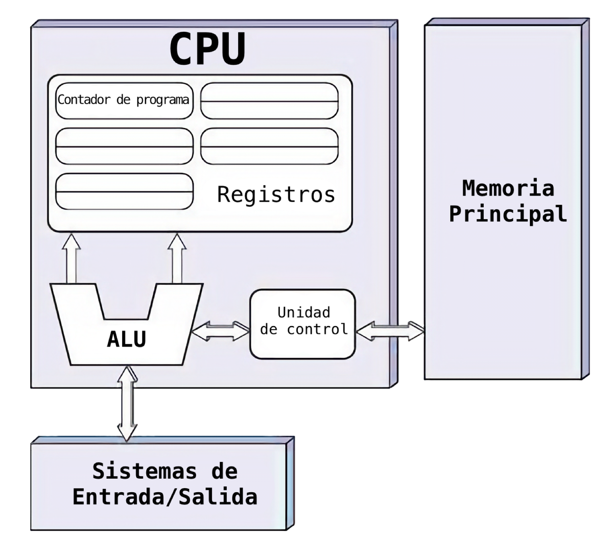
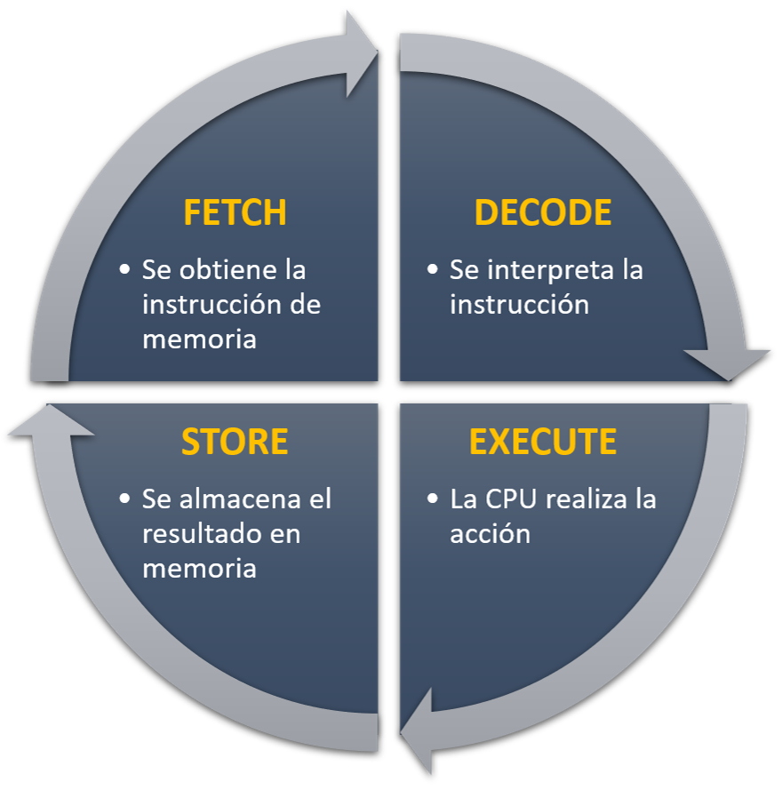
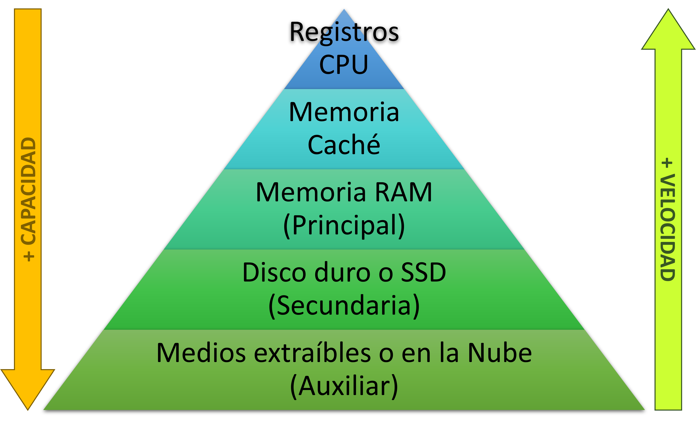
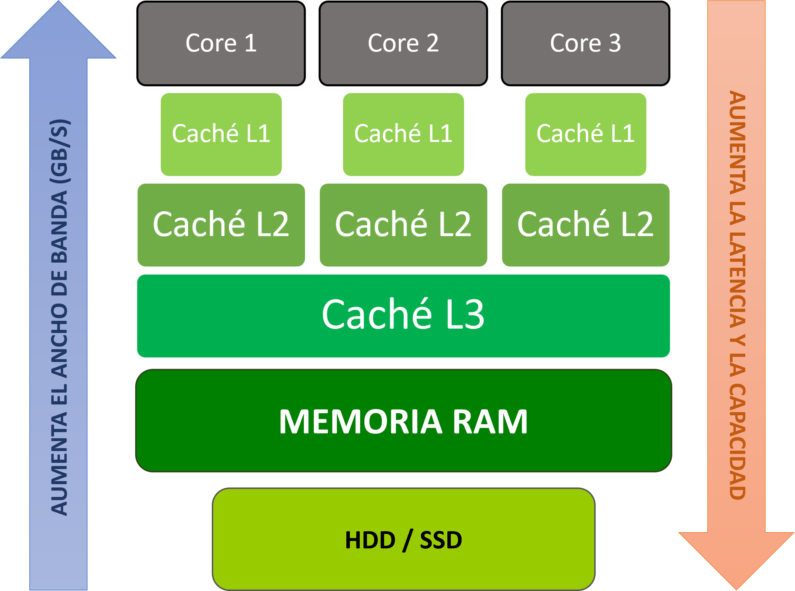
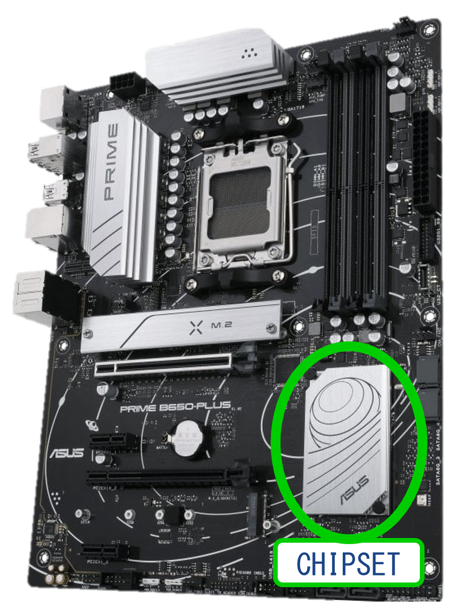
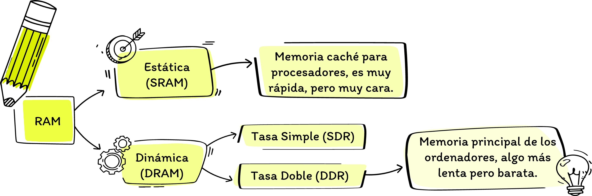
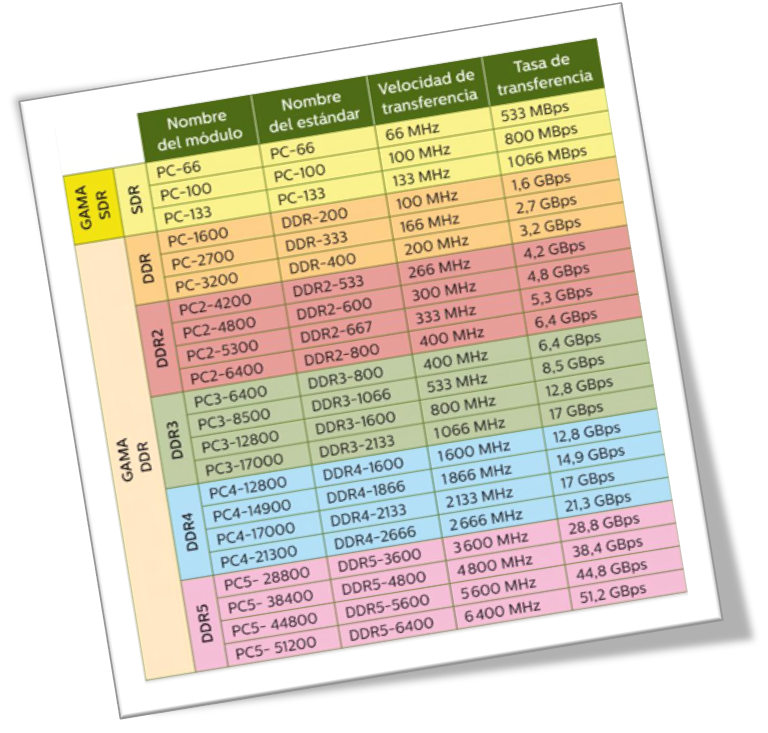

UD1: ESTRUCTURA FUNCIONAL DE UN ORDENADOR
- CE 1.1. Se han identificado y caracterizado los dispositivos que constituyen los bloques funcionales de un equipo microinformático.
- CE 1.2. Se ha descrito el papel de los elementos físicos y lógicos que intervienen en el proceso de puesta en marcha de un equipo.
- CE 1.3. Se ha analizado la arquitectura general de un equipo y los mecanismos de conexión entre dispositivos.
- CE 1.8. Se han clasificado los dispositivos periféricos y sus mecanismos de comunicación.
ELEMENTOS FUNCIONALES
El funcionamiento de los ordenadores actuales esta basado en la Arquitectura de Von Neummann, que establece una serie de unidades funcionales que, interconectadas entre sí funcionan de manera coordinada bajo un control central.
Y con ordenador, nos referimos a cualquier máquina capaz de recibir datos, procesarlos automáticamente mediante instrucciones programadas y entregar un resultado. Es decir, a veces sin darnos cuenta, vivimos rodeados de ellos, como pueden ser un smartphone, smartwatch, smart TV, lavadora, robot aspirador, coches modernos, cajeros automáticos, etc.

- CPU: (Unidad Central de Procesamiento) dirige el funcionamiento del ordenador y es el encargado de realizar las operaciones necesarias para obtener los datos que se solicitan.
- La memoria principal o unidad de memoria, almacena las instrucciones que debe ejecutar el procesador y los datos necesarios para llevarlas a cabo. Sería lo que hoy conocemos como memoria RAM.
- Los dispositivos de E/S (Entrada/Salida), tambien llamados periféricos, son dispositivos independientes que se conectan a una computadora para ampliar sus capacidades y permitir la interacción con el exterior, generalmente con el usuario. Como pueden ser el teclado, el ratón o el monitor.
- Los buses son el sistema de cables o pistas de cobre impresas que transfieren datos y señales eléctricas entre el procesador, la memoria y los demás componentes del ordenador.
LA CPU
La CPU es un microprocesador fabricado en un chip que contiene millones de componentes electrónicos y su función es el control y procesado de datos en un ordenador.
Está formada por la Unidad aritmético-lógica (ALU), encargada de realizar operaciones, por una memoria donde se almacena información temporalmente y por la Unidad de Control (UC) que interpreta y ejecuta las instrucciones. Si entramos más en detalle:
- Unidad Aritmético-Lógica, o ALU, realiza las operaciones de cálculo del ordenador. Estas pueden ser operaciones aritmáticas, como sumas, restas, multiplicaciones y divisiones; operaciones lógicas como NOT, AND, XOR y OR; y comparaciones de valores o desplazamiento de bits.
- Unidad de Control, o UC, controla al resto de componentes internos de la CPU y hace de intermediario entre ALU y la unidad de memoria, encargandose de obtener las instrucciones y datos necesarios de ella, para que la ALU pueda realizar los cálculos oportunos. Al finalizar devuelve el resultado a la memoria. Además, gestiona el flujo de datos entre la CPU, la memoria RAM y los dispositivos de E/S.

- Los registros son pequeñas memorias de de muy alta velocidad ubicadas dentro del procesador. Sirven de almacen temporal de la información del proceso que se está ejecutando en cada momento. Un ejemplo de registro es el "registro acumulador", este guarda los resultados temporales de una operación que se encuentra en curso en la ALU.
CICLO DE INSTRUCCIÓN
El ciclo de instrucción (o ciclo Fetch-Decode-Execute), es el proceso fundamental que realiza la CPU de una computadora millones de veces por segundo, para ejecutar cada línea de código. Este se divide en tres fases principales coordinadas por la Unidad de Control (UC), y en las que cabe destacar el papel de los siguientes registros que intervienen en ellas:
| Registro | Función |
|---|---|
PC |
Contiene la dirección de memoria de la siguiente instrucción. |
RI |
Guarda la instrucción que se está ejecutando en ese momento. |
MAR |
Almacena la dirección de memoria RAM a la que se debe acceder. |
MDR |
Almacena el dato real que había en la memoria RAM o el que se le va a enviar. |
ACC |
Almacena los resultados de las operaciones hechas por la ALU. |
El paso a paso de cada una de estas fases, sería el siguiente:
- Fase de Búsqueda (Fetch): Se lleva la instrucción desde la memoria principal al procesador.
- Paso 1: Dirección de salida. La Unidad de Control mira el Contador de Programa (PC), que tiene apuntada la dirección de memoria de la siguiente instrucción. Esta dirección se copia al Registro de Dirección de Memoria (MAR).
- Paso 2: Lectura en memoria. El MAR coloca la dirección en el bus de direcciones. La Unidad de Control activa la señal de "lectura" hacia la Memoria Principal.
- Paso 3: Transferencia. La memoria principal busca esa dirección, toma el contenido (la instrucción) y lo envía a través del bus de datos hasta el Registro de Datos de Memoria (MBR o MDR).
- Paso 4: Almacenamiento y actualización. La instrucción pasa del MDR al Registro de Instrucción (RI), donde se queda guardada. Al mismo tiempo, el Contador de Programa (PC) aumenta su valor para apuntar ya a la siguiente instrucción.
-
Fase de Decodificación (Decode): El procesador interpreta qué es lo que debe hacer.
- Paso 5: Interpretación. La Unidad de Control examina el código de operación (los bits iniciales de la instrucción) que está guardado en el Registro de Instrucción (RI).
- Paso 6: Preparación. La UC traduce esos bits para saber qué componentes del chip va a necesitar (por ejemplo, si es una suma, si debe buscar más datos en la memoria o si tiene que mover información entre registros).

-
Fase de Ejecución (Execute): Se lleva a cabo la acción real.
- Paso 7: Activación. La Unidad de Control envía señales eléctricas a los componentes necesarios. Si es una operación matemática o lógica, le ordena a la Unidad Aritmético Lógica (ALU) que haga el cálculo.
- Paso 8: Guardado del resultado. El resultado de la operación se guarda en el Registro Acumulador (ACC) o se envía de vuelta a la memoria RAM si la instrucción consistía en guardar un dato. Una vez termina este paso, el ciclo vuelve a empezar inmediatamente desde el Paso 1, con la siguiente instrucción.
MEMORIA PRINCIPAL
La palabra memoria se refiere a cualquier dispositivo que almacena información para su uso posterior. Sobre la memoria sólo se pueden efectuar dos operaciones básicas que son lectura o almacenamiento y escritura.
A las memorias se les administran una dirección, una señal de control que defina la operación y registro de intercambio donde se almacena el dato a bloque a leer o escribir.
Su capacidad se expresa en bit, octetos (byte) o palabras, siendo habitual el de byte y sus múltiplos KiloByte, MegaByte, TeraByte, Petabyte, etc…
JERARQUIA DE MEMORIA
La memoria se organiza en varios niveles en función de su velocidad, capacidad y coste. En general, los niveles de la memoria son los siguientes:

-
REGISTROS: memorias de alta velocidad y baja capacidad integradas en el procesador, utilizadas para el almacenamiento intermedio de los datos, especialmente en la UC y la UAL.
-
CACHÉ: memoria intermedia entre la memoria principal y la CPU, que permite acelerar el acceso a los datos. Cuando accedemos a un dato, este se copia en la caché para que podamos acceder más tarde a él de manera más rápida. Está dispuesta en varios niveles (L1, L2, L3, L4); y la diferenciación entre ellos obedece a un orden de jerarquía establecido por cercanía al procesador, velocidad y capacidad.
- Caché L1: la más cercana al procesador y la más rápida, pero la que menos capacidad tiene. Cada núcleo del procesador tiene su propia L1.
- Caché L2: Es propia de cada núcleo en la inmensa mayoría de las arquitecturas modernas. Es un poco más grande y ligeramente más lenta que la L1, pero actúa como un respaldo directo antes de salir del núcleo.
- Caché L3: se posiciona en un nivel inferior a la anterior tanto en cercanía como en velocidad, pero tiene una capacidad mucho mayor. Es compartida por todos los núcleos del procesador y sirve para que los núcleos intercambien datos entre sí de forma eficiente sin tener que pasar por la memoria RAM y para coordinar las tareas del sistema.

- Caché L4: es un tipo de memoria caché poco habitual que se utiliza normalmente como apoyo para mejorar el rendimiento de GPUs integradas, evitando que estás recurran a la RAM como memoria gráfica. Cuando está presente, se encuentra fuera del procesador (en un chip intermedio llamado eDRAM) y es totalmente compartida por los núcleos y la tarjeta gráfica integrada.
De este modo, cuando un procesador busca instrucciones y datos que necesita, primero tira de la memoria caché, siguiendo el orden de jerarquía indicado. Es decir, primero busca en la caché L1, si no encuentra nada, recurre a la caché L2 y así sucesivamente.
Si la información no se encuentra en ningún nivel de la caché, entonces pasa a solicitarla a la memoria RAM.
-
PRINCIPAL: hace referencia normalmente a la memoria RAM, aunque también mencionaremos dos memorias más, que se consideran memorias del Sistema y que podrían catalogarse en este apartado, ya que son cruciales para el arranque del sistema:

- RAM: es la memoria principal del equipo, es volátil (al apagar el dispositivo se pierde su contenido) y de alta velocidad. Se encarga de almacenar los datos de los programas que estás ejecutando en cada momento.

- ROM: memoria no volátil de solo lectura, almacena el programa básico de inicio o BIOS, que verifica que los componentes funcionen al encender el equipo.

- CMOS: pequeña memoria de lectura/escritura (entre 512 y 2048 bits),que contiene los parámetros clave de configuración del sistema (hardware detectado, orden de arranque, contraseña de la BIOS, fecha y hora, etc.). Es una memoria volátila, pero mantiene la información guardada gracias a una pequeña pila de botón (CR2032) instalada en la placa base.
-
SECUNDARIA o memoria de disco: formada por los discos duros del ordenador, es una memoria de alta capacidad no volátil para almacenar la información de forma permanente.
- AUXILIAR: esta memoria se usa como soporte de respaldo de información, pudiendo situarse en medios extraíbles o en red.
DISPOSITIVOS E/S
Son componentes externos que se conectan a la computadora y nos permiten interactuar con ella. Distinguimos tres grandes categorías:
- De entrada: permiten al usuario enviar información o comandos al equipo para generará algún tipo de acción o proceso. Algunos ejemplos comunes de dispositivos de entrada son el teclado, el ratón, el escáner, el micrófono, el joystick, etc.
- De salida: son dispositivos que muestran o reproducen la información generada por el equipo. Algunos ejemplos de dispositivos de salida son el monitor, la impresora, los altavoces, etc.

- De entrada/salida (mixtos): permiten tanto la entrada como la salida de datos. Dentro de estos podemos diferenciar dos subcategorias:Algunos ejemplos de dispositivos de entrada y salida son , etc.
- De comunicación: la pantalla táctil, auriculares con microfono integrado, la impresora multifunción, los sistemas de realidad virtual.
- De almacenamiento: disco duro externo, memorias USB.
BUSES
Un bus es una vía de comunicación que conecta dos o más componentes. Su principal característica es que es un medio de transmisión compartido, de tal manera que una señal transmitida por un dispositivo puede ser recibida por todas las demás unidades conectadas.
Esto también conlleva que en un determinado instante de tiempo, solo es posible la transmisión de un dispositivo, ya que, de lo contrario las señales se solaparían.
Se denomina bus del sistema al conjunto de circuitos encargados de la conexión y comunicación entre la CPU y el resto de las unidades del ordenador. Para ello utiliza un conjunto de líneas eléctricas que permiten la transmisión de los datos en paralelo.
BUS DE SISTEMA
El bus del sistema está formado por tres líneas independientes: datos, direcciones y control.

Las líneas de datos transporta la información real (los datos e instrucciones) entre el procesador (CPU), la memoria principal y los periféricos. La información es bidireccional, puede darse en ambos sentidos, hacia el procesador; o hacía la memoria o periféricos.
Las líneas de dirección se utilizan para seleccionar el origen o el destino de la información que viaja por el bus de datos. Es decir, transporta la ubicación física exacta en la memoria RAM o en los dispositivos de entrada/salida, con la que la CPU necesita comunicarse. La información suele ser unidireccional, de la CPU a la memoria o los periféricos.

Las líneas de control se usa para coordinar, sincronizar y dirigir todas las operaciones de lectura y escritura entre la CPU, la memoria y los periféricos; mediante el envío de señales de control.

BUSES DE EXPANSIÓN
Estos buses permiten conectar tarjetas de expansión para ampliar las funciones de una computadora, algunos ejemplos de las más comunes son: PCI-Express de 1, 4, 8 y 16 canales.
COMPONENTES FÍSICOS DE UN ORDENADOR
LA CAJA
Estructura, generalmente metálica, cuya función es alojar y proteger los componentes internos del ordenador.
PRINCIPALES ESPECIFICACIONES
A la hora de elegir una caja debemos tener en cuenta las siguientes características:
-
Tamaño: Determina qué componentes caben en su interior. Según sus dimensiones, condicionará la compatibilidad con el tamaño de la placa base (factor de forma), el largo de la tarjeta gráfica, la altura del disipador del procesador o el tipo de fuente de alimentación.
-
Materiales: Influyen directamente en la durabilidad, la estética y el aislamiento acústico. Los paneles metálicos (acero o aluminio) aportan solidez y mejoran la disipación, mientras que el cristal templado o metacrilato en los laterales permite exhibir el interior.
-
Ventilación: Crucial para mantener las temperaturas bajo control. Hay que evaluar la cantidad de ventiladores incluidos, la capacidad para añadir más, si el frente es de malla (mesh) para optimizar la entrada de aire y la compatibilidad con radiadores de refrigeración líquida.
-
Peso: Relacionado con la densidad de los materiales y la solidez de la estructura. Una caja más pesada suele indicar materiales de mayor calidad e ingeniería robusta, lo que ayuda a reducir las vibraciones de los discos y ventiladores, aunque resta portabilidad.
-
Bahías de Expansión: Definen la capacidad de almacenamiento y actualización del equipo. Incluyen los espacios dedicados para montar unidades de disco (SSDs de 2.5" y HDDs de 3.5"), así como las ranuras PCIe traseras para añadir tarjetas de video, sonido o red.
-
Conexiones frontales: Garantiza la accesibilidad diaria a los periféricos sin tener que acudir a la parte trasera. Es importante verificar la cantidad y velocidad de los puertos disponibles, como USB 3.0, USB Type-C y los jacks de audio para auriculares y micrófono.
ESTRUCTURA GENERAL
Aunque puede variar ligeramente dependiendo del modelo o tipo de caja que estemos usando, generalmente diferenciamos tres grandes zonas en la estructura de una caja:
-
LATERALES: Son las tapas o paneles de los lados de la caja. El lateral principal que es abierto y es por donde se introducen todos los componentes, en muchas de las cajas actuales suele ser de cristal templado o metacrilato para permitir la vista de los componentes internos y la iluminación. Mientras que el lateral opuesto es metálico y ciego, sirviendo para atornillar la placa y organizar todo el cableado por detrás esta.
-
TRASERA: Es la zona que suele quedar orientada a la pared, donde se concentran todas las salidas de los diferentes conectores, como son el panel de conectores externos de la placa base, las ranuras o bahías de expansión para instalar diferentes tarjetas; y el hueco para la fuente de alimentación quedando visible su conector de alimentación.
-
PANEL FRONTAL: Puede estar situado al frente de la torre o encima. Tiene una doble función, albergando por un lado, los botones de encendido/reinicio, puertos USB y tomas de audio; y por otro, actuando como una entrada de flujo de aire, ya que cuenta con rejillas o perforaciones detrás de las cuales se instalan los ventiladores que introducen aire fresco al sistema.

PRINCIPALES FORMATOS
Como mencionabamos antes, uno de los aspectos más relevantes cuando buscamos una caja, es su tamaño. En base a este, diferenciamos varios formatos de chasis, de los cuales cada uno será compatible con unos tipos de placas base u otras. Siendo los más utilizados la media torre, como ordenador personal; la minitorre o sobremesa (equivale a una minitorre pero diseñada para usarse en horizontal), como puestos de trabajo en el ambito profesional o educativo; y la torre completa, como equipos para alojar servidores en centros de datos.
En la siguiente imagen, vemos los principales formatos, junto con sus medidas y los tipos de placas base con los que son compatibles:

FUENTE DE ALIMENTACIÓN
También conocida como PSU (Power Suply Unit), es el dispositivo que transforma la corriente de la red eléctrica (alterna a 220V) en una corriente que pueda soportar el equipo (continua de 3.3, 5 y 12V).
FUENTES ATX
Las fuentes AT-eXtendidas (ATX), constan de dos partes, una principal, que equivale las antiguas fuentes AT; y otra auxiliar, que se encuentra siempre encendida.
El interruptor de encendido solamente controla la primera parte, de modo que mediante la parte auxiliar podemos realizar apagados y encendidos por software. Es decir, estas fuentes están permanentemente alimentadas, por lo que, a la hora de manipularlas debemos apagar el ordenador y además desconectarlo completamente de la corriente por precaución.

Todas las fuentes generan una cantidad importante de calor, por ello tienen al menos un ventilador. En la actualidad, podemos encontrar fuentes de entre 180W y 2000W de potencia. En la mayoría de personas elige fuentes entre 450W y 850W.
Es el formato de fuente más utilizado en la actualidad, con sus medidas de 150mm x 150mm x 86mm, es el que más potencia puede ofrecer.
Los conectores que encontramos en una fuente ATX son:
| CONECTORES | FUNCIÓN |
|---|---|
| ATX 24 Pines | Se encarga del suministro principal de energía de la placa base. |
| EPS 4 u 8 Pines | Alimenta de forma dedicada al procesador (CPU). |
| SATA | Alimentación para uniades de almacenamiento (HDD o SSD) y tambien para ciertos accesorios como iluminación RGB. |
| PCI-E 6 u 8 Pines | Alimentación extra para tarjetas de expansión, cuando es necesaria. Comúnmente para tarjetas gráficas potentes. |
| MOLEX 4 Pines | Alimentación para ventiladores y discos duros antiguos. Hoy estan en su mayoría reemplazados por el SATA. |
| FDD | Alimentación para la disquetera y algunos accesorios o tarjetas de expansión antiguas. No suele verse en fuentes actuales, ya que está en desuso. |
OTRAS FUENTES

Hay fuentes adaptadas a cajas de dimensiones inferiores, como son:
- SFX: 125 x 63,5 x 100 mm
- TFX: 85 x 65 x 175 mm
- Flex ATX: 150 x 81,5 x 40,5 mm
Además las fuentes de alimentación pueden presentarse en formato modular o semi-modular, dependiendo de si permiten desconectar los cables no utilizados parcial o totalmente.
CERTIFICACIONES DE ENERGIA
Es un punto importante a valorar en la compra de nuestra fuente, puesto que, se trata de que eficiencia energética posee. Para ello, se utiliza el certificado 80 PLUS, el cual se subdivide en varios niveles. 80 PLUS significa que cumple con las siguientes especificaciones:
- White: 80% de eficiencia con un nivel de carga del 20%, 85% con un PFC de 0,9 con el 50% de carga y 80% al 100%.
- Bronze: 82% de eficiencia con un nivel de carga del 20%, 85% con un PFC de 0,9 con el 50% de carga y 82% al 100%.
- Silver: 85% de eficiencia con un nivel de carga del 20%, 88% con un PFC de 0,9 con el 50% de carga y 87% al 100%.
- Gold: 87% de eficiencia con un nivel de carga del 20%, 90% con un PFC de 0,9 con el 50% de carga y 87% al 100%.
- Platinum: 90% de eficiencia con un nivel de carga del 20%, 90% con un PFC de 0,95 con el 50% de carga y 89% al 100%.
- Titanium: 90% de eficiencia con un nivel de carga del 10%, 92% con un PFC de 0,95 con el 50% de carga y 90% al 100%.

PLACA BASE
Circuito impreso donde se interconectan todos los componentes necesarios para que un ordenador funcione.
FACTOR DE FORMA
El factor de forma, define una serie de características físicas básicas de la placa, para que esta pueda integrarse correctamente en la caja.
Los más utilizados son:

| Nombre | Medidas |
|---|---|
| ATX | 30.5 x 24.4 cm |
| MICRO-ATX | 24.4 x 24.4 cm |
| MINI-ITX | 17 x 17 cm |
| NANO-ITX | 12 x 12 cm |
| PICO-ITX | 10 x 7,2 cm |
COMPONENTES CLAVE

- SOCKET: El socket o zócalo es el conector físico de la placa base donde se instala el microprocesador. Mantiene el chip fijo y seguro en su sitio mediante un sistema de palanca o retención.
Según el lugar donde se encuentran los pines, diferenciamos tres tipos:
| TIPO | SIGLAS | DESCRIPCIÓN |
|---|---|---|
| LGA | Land Grid Array | Los pines estáne en el zócalo. |
| PGA | Pin Grid Array | Los pines estan en el procesador. |
| BGA | Ball Grid Array | El procesador viene soldado a la placa. |
Dependiendo del tipo que tengamos, será compatible con un tipo de procesador correspondiente:

- CHIPSET: tambien conocido como PCH (Platform Controller Hub), se refiere a un conjunto de microchips y componentes electrónicos que vienen instalados en una placa base. Además de servir de apoyo al procesador en la gestión de datos y el control de las ranuras de expansión y periféricos; define la capacidad de expansión y la compatibilidad con diferentes tecnologías que tendrá nuestra placa, indicando por ejemplo, el tipo de procesadores compatibles, la cantidad máxima de RAM que soporta o las tecnologías de memoria RAM soportadas.

Por norma general, se localiza en la esquina inferior derecha o en la zona media inferior de la placa, al lado o debajo de las ranuras PCI Express. Suele estar cubierto por un disipador dedicado de aluminio, que puede ser plano o en forma de radiador, y en muchas ocasiones con el logotipo del fabricante.

- BIOS: son las siglas de Sistema Básico de Entrada y Salida, y es el primer programa que se ejecuta al encender un ordenador. Su objetivo es preparar y comprobar el correcto funcionamiento de todos los componentes hardware conectados a la placa base, antes de cargar el sistema operativo.
El firmware de la BIOS se encuentra almacenado en un pequeño chip de memoria ROM, soldado a la placa y viene configurado con unos valores de fábrica, de los cuales la mayoría se pueden modificar. Algunas placas de gama alta, pueden contar dos chips, uno principal y el otro para guardar una copia de respaldo; esto se llama DUAL BIOS.

Todos esos cambios de configuraciones del sistema, como pueden ser fecha y hora del sistema, la configuración de los dispositivos, contraseña del BIOS, orden de arranque, etc; se almacenan en un chip de memoria volátil llamado CMOS o RTC (Real-Time Clock), el cual es alimentado por una pila de botón, para poder mantener la información cuando el equipo esta apagado. Por otro lado, también podemos resetear estas configuraciones de fábrica, puenteando las cabeceras (jumpers) "ClearCMOS" para limpiar la memoria CMOS.

En resumen, podemos decir que al encender el ordenador, la BIOS consulta la memoria CMOS para obtener las configuraciones existentes y aplicarlas a los componentes hardware.
¿Como localizar físicamente la BIOS?
- Suele ubicarse cerca del chipset o próximo a la pila.
- Generalmente es un chip de 8 pines y tiene un pequeño punto grabado en una de sus esquinas para indicar la posición del pin 1.
- Cuenta con un código impreso en el chip, que casi siempre empieza por el número 25.
- Suele tener impreso el nombre del fabricante, algunos de los más comunes son: Winbond, Macronix (MXIC), GigaDevice (GD), Atmel, STMicroelectronics o ISSI.
CONECTORES
CONECTORES INTERNOS: están dentro de la torre o carcasa y unen las piezas principales a la placa base:
- ATX 24 pines: Conector de alimentación de la placa base.
- ATX 12V (EPS): Conector de alimentación de la CPU.
- Ventilador CPU: Conector de alimentación para el ventilador de la CPU.
- Ventiladores de la Caja: Conectores de alimentación para ventiladores de la caja.
- Ranuras Memoria: En ellas se conectan los módulos de memoria RAM.
- Ranuras PCIe: En ellas se conectan las tarjetas de Expansión.
- Ranura M.2: Sirve para conectar una unidad de almacenamiento SSD M.2.
- Conectores SATA: Sirven para conectar unidades de almacenamiento HDD o SSD.
CONECTORES EXTERNOS: son los puntos visibles en la parte trasera o frontal para conectar los periféricos:
- USB Tipo A (Universal Serial Bus): Conecta ratones, teclados y memorias flash con facilidad. Puedes consultar más detalles en la guía de BEEP.
- USB Tipo C:
- HDMI y DisplayPort: Envían señal de video y audio de alta definición hacia los monitores.
- Ethernet (RJ45): Permite conectar el equipo a una red de internet mediante cable.
- Jack de 3.5 mm: Se usa para auriculares, altavoces y micrófonos analógicos.
CONEXIONES INALÁMBRICAS: permiten la comunicación mediante ondas de radio:
- Bluetooth Conecta dispositivos cercanos como ratones, teclados o auriculares de forma directa.
- Wi-Fi Conecta el equipo a redes locales y a internet sin usar cables de red.
CABECERAS
- Cabecera Audio Frontal: Se encargar de la conexión de la Entrada/Salida de audio del panel frontal.
- Cabeceras USB: Permite añadir más puertos USB al equipo.
- Cabecera Panel Frontal: Proporciona conexión a los diferentes elementos del panel frontal.
- Cabecera CMOS: Permite resetear la BIOS sin necesidad de acceso software.
PROCESADOR
Circuito integrado que dirige y controla el resto de componentes del equipo informático.
Las principales características a tener en cuenta a la hora de elegir un procesador son: Frecuencia: es la velocidad con la que el procesador realiza una tarea. Núcleos: son como pequeños microprocesadores dentro del procesador. A mayo número de núcleos se supone mayor rendimiento. Subprocesos o Hilos: es la cantidad de subtareas simultaneas que puede realizar cada núcleo. Por ejemplo, 4 núcleos y 8 hilos, quiere decir que cada núcleo puede ejecutar 2 hilos a la vez. Caché: se divide en niveles (L1, L2, L3…). Cuanto mayor sea la capacidad del nivel más alto, más efectivo será el procesador.
Los principales fabricantes de procesadores para PC son Intel y AMD. A la hora de adquirir uno, debemos fijarnos que sea compatible con el tipo de socket que tiene nuestra placa (PGA o LGA).
REFRIGERACIÓN
Reduce la temperatura de ciertos componentes del ordenador y de la caja en general.
El sistema de refrigeración esta compuesto por disipadores (refrigeración pasiva), que son piezas metálicas que absorben fácilmente el calor. Y por ventiladores (refrigeración activa), que aceleran el flujo de aire y lo empujan hacia fuera de la caja. Otro elemento extra que se añade es la pasta térmica, que aumenta la zona de contacto con el disipador y favorece el traspaso de calor a este.
MEMORIA RAM
Memoria volátil donde se almacenan los datos e instrucciones de las aplicaciones que están en ejecución.
FACTOR DE FORMA (RAM)
Se refiere al estándar físico que define el tamaño, forma, número de pines y la disposición de los conectores de una memoria. Diferenciamos 2 grandes tipos:
- DIMM (Dual In-line Memory Module): usada en ordenadores de sobremesa, mide unos 13 cm de largo y cuenta con un mayor número de pines.
- SO-DIMM (Small Outline DIMM): para portátiles y mini PCs, son una versión más compacta para usar en espacios reducidos. Mide casi la mitad (unos 7 cm) y tiene menos pines.

TIPOS
Si nos fijamos en la tecnología usada para almacenar los datos, podemos hacer la siguiente clasificación de memorias RAM:


Visualmente, podemos diferenciarlas facilmenta ya que las memorias SDR tienen dos muescas, mientras que las DDR solo una.
ESTÁNDARES Y VELOCIDADES
Dentro de la RAM dinámica, distinguimos entre las distintas generaciones de memoria que han ido surgiendo. Donde cada una de ellas dobla la velocidad de la generación anterior. Por ejemplo, SDR funciona a la misma velocidad que el bus de memoria; mientras que DDR trabaja al doble de velocidad que SDR; y así sucesivamente.
En la siguiente tabla podemos ver las velocidades y capacidades de cada generación más en detalle:
ALMACENAMIENTO
Su objetivo es guardar los datos e información que requerimos tener de forma permanente, como el Sistema Operativo, los documentos e imágenes del usuario…
TIPOS DE ALMACENAMIENTO INTERNO
-
HDD o Unidad de Disco Duro, compuesto por elementos mecánicos, como un brazo con varios cabezales que escriben o leen la información almacenada en varios platos metálicos mediante grabación magnética. Se conecta al puerto SATA y también a la fuente de alimentación. Alcanzan velocidades de lectura/escritura de hasta unos 160 MB/s.
-
SSD o Unidad de Estado Sólido, se basa en un circuito impreso compuesto por componentes electrónicos. Es más reducida en tamaño que un HDD y es hasta 5 veces más rápida. Se conecta por un lado al puerto SATA (Serial Advanced Technology Attachment ) y por otro a la fuente de alimentación. Alcanzan velocidades de lectura/escritura de hasta unos 600 MB/s.
-
M.2 SATA: es una evolución del SSD, que reduce considerablemente su tamaño. Aunque debido a limitaciones del protocolo de transferencia (AHCI), los primeros modelos tenían velocidades similares a las de un SSD normal, ya que seguía usando la tecnología tradicional SATA. Tienen dos muescas en la zona de los conectores.
-
M.2 NVMe: (Non-Volatile Memory Express) es un protocolo de comunicación creado en 2011 exclusivamente para memorias flash y SSD. Se conecta directamente al procesador (CPU), a través del bus PCI Express (PCIe) de la placa base; ofreciendo un rendimiento muy superior a los modelos anteriores. Solo presentan una muesca en la parte de los conectores, lo que los diferencia visualmente M.2 SATA. Existen diferentes generaciones basadas en la interfaz PCIe y cada una mejora las velocidades de la anterior. Por ejemplo:
- PCIe 3.0: velocidades máximas alrededor de 3500 MB/s.
- PCIe 4.0: velocidades máximas de unos 7000 MB/s.
- PCIe 5.0: velocidades máximas de los 12000 a 14000 MB/s.

TARJETAS DE EXPANSIÓN
Son dispositivos que sirven para ampliar las capacidades del ordenador. Añadiendo funciones que el equipo no tiene o mejorando las que ya ofrece.
TARJETA GRÁFICA
Es el tipo de expansión más utilizada, llegando a convertirse casi en indispensable hoy en día. Ya que las gráficas que vienen integradas de serie, suelen ser muy básicas.
Su función es procesar toda la información relacionada con imágenes y videos, para ofrecer una visualización de alta calidad. Para ello, cuentan con su propio procesador (GPU) y su propia memoria RAM (VRAM).
Se conectan en las ranura PCIe-X16 y las más potentes, también a la fuente de alimentación.
OTRAS TARJETAS
-
TARJETA DE SONIDO: Se basa en un chip que procesa el audio con alta calidad. Suele usarse para necesidades específicas de edición multimedia o videojuegos.
-
TARJETA DE RED: Proporcionan acceso a una red informática, como puede ser Internet. Pueden ser por cable o inalámbricas (WiFi, Bluetooth). Hoy en día viene integrada en la placa base
-
TARJETA DE EXPANSIÓN USB: Sirve para aumentar el número de puertos USB de un ordenador.
-
TARJETA CAPTURADORA DE VIDEO: Se utilizan para capturar la imagen de dispositivos externos como consolas o cámaras y procesarla en el ordenador.
Fuentes: PC Sin Misterios, Info Computer,